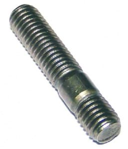
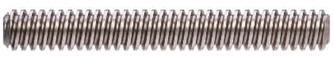
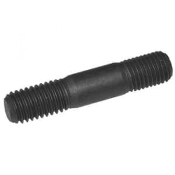
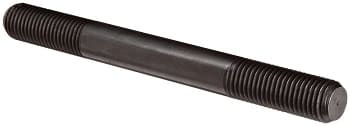

Шпильки резьбовые
17 типов изделий в категории.

DIN 2510 Шпилька для фланцев

DIN 835 Шпилька резьбовая

DIN 938 Шпилька резьбовая

DIN 939 Шпилька резьбовая

DIN 975 Шпилька с трапецеидальной резьбой

DIN 975 шпилька резьбовая

DIN 976-1 шпилька резьбовая

ГОСТ 22032-76 Шпилька

ГОСТ 22035-76 Шпилька

ГОСТ 22042-76 Шпилька

ГОСТ 9066-75 Шпилька

Резка шпилек и шпоночной стали в размер

Стойка монтажная

Шпилька для химического анкера

Шпилька запрессовочная

Шпилька приварная